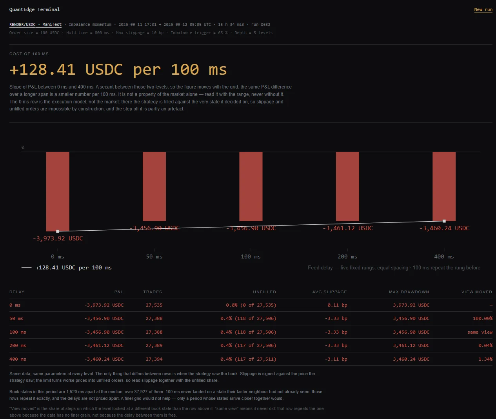

Latency cost, measured on recorded Solana order books
What does feed latency cost your strategy? Measure it. Sometimes the answer is zero.
Replay a strategy over recorded Solana order books at five feed delays (0 · 50 · 100 · 200 · 400 ms) and read the P&L at each. Nothing is sent to any market: every run is a replay.
Three screens
Run. Pick a market, a recorded period and a preset, tune its parameters, run it at five delays, and read “delay → P&L” plus the cost of 100 ms.
Terminal. The live book for one market, with the measured lag between two real delivery channels, the age of the last update and a staleness mark.
Compare. The same book arriving over two real channels side by side, one row per update, with the distribution of the difference. An emulated lane appears only when you type its profile, and it is labelled as emulated.
How it measures
- Two independent RPC providers subscribe to the same on-chain order books. Every book state is stored with the time each channel received it.
- Latency is the difference between two real channels, never a distance from an emulated one.
- The engine replays the strategy against the stored books at each delay. It has no clock, no I/O and no randomness, and money is kept in integer units, so a run repeats byte for byte.
- If a delay is finer than the data, the result says so: each row reports how often its view actually moved. A run over incomplete data refuses to start and names the gap.
10 of 10
windows where P&L at 0 ms was lower than at 400 ms
What it found on Manifest
Over 15.57 hours of recorded books on three Manifest markets (cbBTC, RENDER and USDT, each against USDC), the three shipped strategies did not make more money with a faster feed. The result held across 180 configurations: five order sizes from 100 to 1,000,000 USDC, three slippage tolerances, two delay grids, two window sets, plus a fourth strategy built so that speed would be an edge.
The mechanism is two measured numbers. A book state lasts about 1.5 s, so every non-zero delay sees the same earlier state. Over that horizon the market mean-reverts, and average slippage at 400 ms is −1 to −9 bp: the later order fills better. The 0 ms row is the execution model’s baseline, where the strategy fills against the very book it read; no trader can occupy it.
What this does not say
Manifest, 11–12 September 2026, taker strategies, this execution model. It does not say that speed fails to pay on Solana.
Is the instrument right?
- A 150 ms delay injected into one channel
- measured 151 ms
- Repeated runs with identical inputs
- 10 of 10 byte-identical
- Runs over a period with a gap
- 10 of 10 refused, gap named
- 6-hour run at five delays, hosted instance
- p95 9.5 s
- Terminal first screen, Lighthouse 3G profile
- 1.60 s
- Recorded order books
- 45.9 market-hours in 131.6 MB
Nine of the ten targets set before the build were met. The tenth expected latency to cost money on this venue; the section above is what was measured instead.

What it does not do
- No orders, no transactions, no wallet, no custody. Execution exists only inside a replay.
- No accounts or sign-in. Saved strategies hang on a random session key; clearing site data loses them.
- No user code and no strategy language. Three presets with parameters.
- No AMM pools as a book source. Only on-chain order books where the book is account state.
- No DoubleZero or vendor latency figures. The fast lane is emulated and labelled as such.
- No absolute “time since the chain event”. Channels are measured against each other.
- Takers only. Makers cannot be modelled honestly without a trade tape.
- No history before the collector started.
Questions
- Does this mean fast data is worthless on Solana?
- No. It says that on Manifest, over these 15.57 hours, for taker strategies under this execution model, 0 to 400 ms did not pay. Your strategy on your data is the question the terminal is for.
- Why do 50, 100 and 200 ms give the same row?
- The book changes about once every 1.5 s, and at most once per slot. A delay shorter than that gap sees the same state. The result reports it instead of hiding it.
- Where does the data come from?
- Two independent RPC providers subscribed to Manifest market accounts, recorded continuously. Gaps are recorded as gaps.
- Do I need an account?
- No. Open the terminal and press Run.
- Is the fast lane DoubleZero?
- No. The product has no access to it; any fast lane is a typed profile and is marked as emulated.